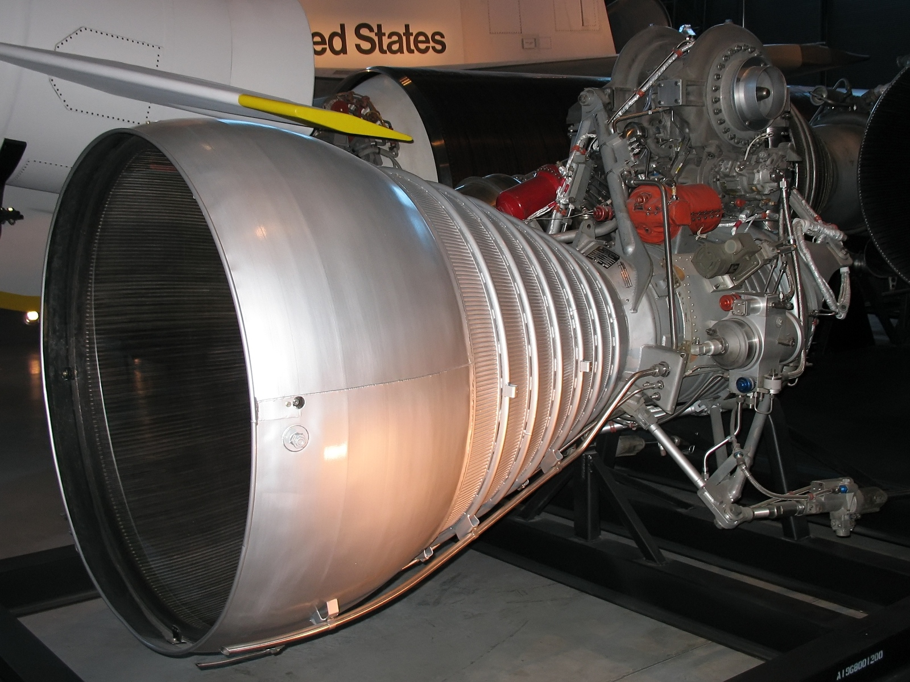

Raketový motor
Raketový motor je typ reaktivního motoru, který využívá princip akce a reakce k vytváření tahu, díky schopnosti operovat bez kyslíku ho lze využít i mimo zemskou atmosféru.
Tento typ motoru se nejčastěji používá v raketách, kosmických sondách či zbrojním průmyslu.
